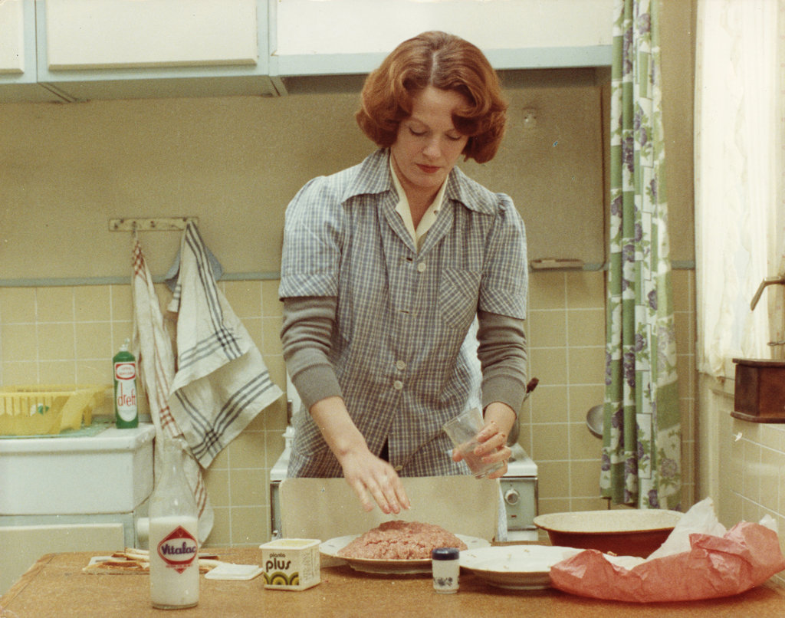

<- back

Jeanne Dielman 23, Quai du Commerce, 1080 Bruxelles.
bus stories
.--. .---. .-. .---|--| .-. | A | .---. |~| .--. .--|===|Ch|---|_|--.__| S |--|:::| |~|-==-|==|---. |%%|NT2|oc|===| |~~|%%| C |--| |_|~|CATS| |___|-. | | |ah|===| |==| | I | |:::|=| | |GB|---|=| | | |ol| |_|__| | I |__| | | | | |___| | |~~|===|--|===|~|~~|%%|~~~|--|:::|=|~|----|==|---|=| ^--^---'--^---^-^--^--^---'--^---^-^-^-==-^--^---^-'
14th of April, 2024 | 14.04.2024 | unavailable on medium
Jeanne Dielman 23, Quai du Commerce, 1080 Bruxelles.
here is a collection of bus stories that made me fall in love with humanity.
A shot from the movie was used as the header photograph here. The movie is copyrighted under CC BY-NC-ND 4.0, the content is free to copy and redistribute in any medium with attribution. The movie belongs to Chantal Akerman.
ways to contact me
if you want to message me, feel free to do so through letterbird.co